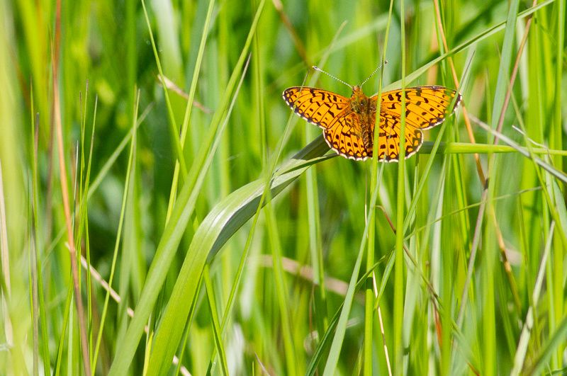
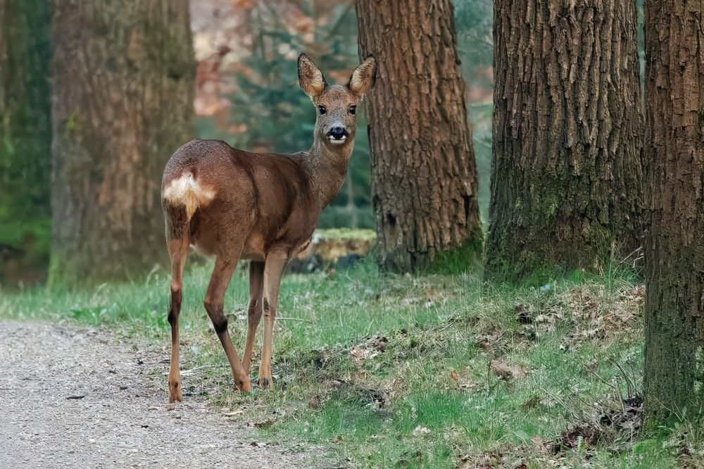
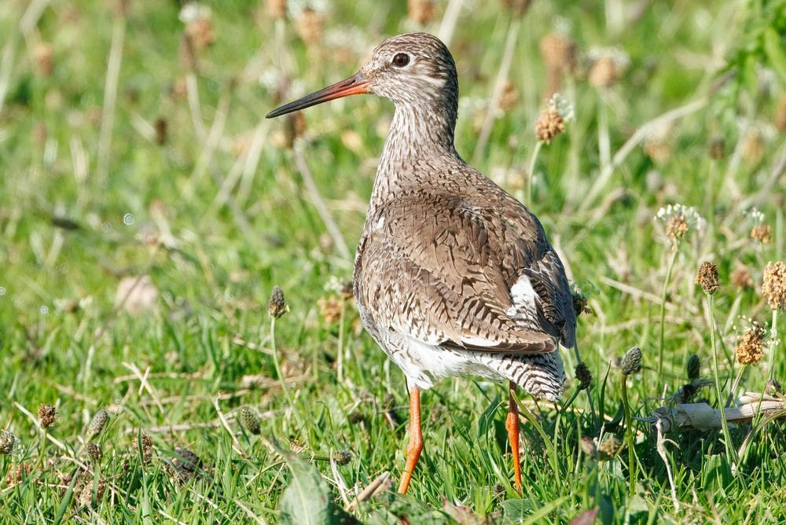
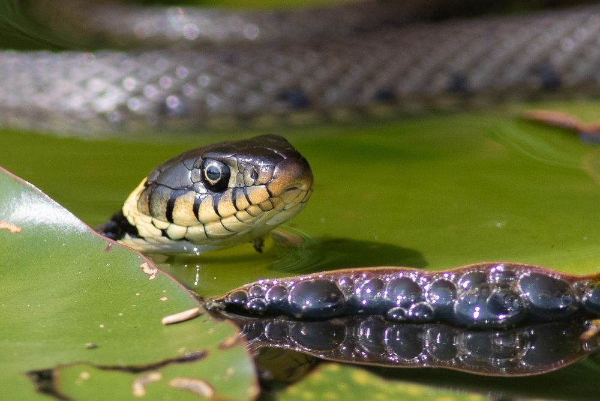

Voor evenementen
Voor evenementen
Een festival in een uiterwaard, een dorpsfeest in het park, een openluchtvoorstelling aan de bosrand. Wij brengen in beeld wat de natuurwetgeving van uw evenement vraagt, ruim voordat de vergunningaanvraag op tafel ligt.
Leg uw plan aan ons voorBij een evenement zit het effect in het gebruik
Anders dan bij bouwen of slopen verdwijnt er meestal niets. De vraag is wat het evenement zelf doet met de omgeving, en die vraag reikt verder dan de hekken om het terrein.
Geluid
Geluid draagt ver over open terrein en water. Voor vogels en zoogdieren in de omgeving is verstoring een zelfstandige verbodsbepaling onder de Omgevingswet, los van de vraag of er iets wordt aangetast.
Verlichting
Podiumverlichting, lichtmasten en terreinverlichting verstoren vliegroutes en foerageergebied van vleermuizen, en verjagen rustende vogels. Vaak is met de richting en afscherming van licht veel op te lossen.
Publiek en betreding
Duizenden bezoekers op een terrein betekenen vertrapte vegetatie, verdichte bodem en verstoorde rust- en foerageergebieden. Wij kijken ook naar herstel na afloop.
Op- en afbouw
De op- en afbouw duurt vaak langer dan het evenement en valt in een andere periode van het jaar. Soms binnen het broedseizoen, terwijl het evenement zelf daarbuiten valt.
Verkeer en parkeren
Bezoekersverkeer, shuttlebussen en aggregaten leiden tot stikstofdepositie. Ligt er een stikstofgevoelig Natura 2000-gebied in de buurt, dan is dat een apart onderdeel van de beoordeling.
Herhaling
Een jaarlijks terugkerend evenement is iets anders dan een eenmalige editie. Dan telt het opgetelde effect over de jaren mee, en verandert ook het gesprek met de gemeente.
Drie sporen die naast elkaar lopen
Dit is de meest gemaakte aanname bij evenementen: dat de vergunning van de gemeente het hele verhaal is. Dat is niet zo. De drie sporen hebben verschillende bevoegde gezagen en de een zegt niets over de ander.
Evenementenvergunning
Verleend door de gemeente. Gaat over veiligheid, geluidsnormen en openbare orde. Uw ecologische onderbouwing hoort hier als bijlage bij, maar de vergunning zelf regelt de natuurwetgeving niet.
Omgevingsvergunning flora- en fauna-activiteit
Verleend door de provincie. Nodig zodra het evenement beschermde soorten verstoort en dat niet met maatregelen te voorkomen is. Hier gaat een quickscan aan vooraf, en zo nodig soortgericht veldonderzoek.
Natura 2000-activiteit
Speelt zodra het terrein in of nabij een Natura 2000-gebied ligt. Begint met een voortoets. Zijn significante gevolgen daarin niet uit te sluiten, dan volgt een passende beoordeling en een vergunning.
Wat wij voor u doen
Wij beginnen met de twee onderzoeken die samen het beeld compleet maken, en gaan pas verder als daaruit blijkt dat het nodig is.
Quickscan flora en fauna
Bureaustudie en veldbezoek van het evenemententerrein, inclusief de op- en afbouwzone, het parkeerterrein en de aanrijroutes. Welke beschermde soorten kunnen hier zitten, en wat betekent het evenement voor ze.
Voortoets Natura 2000
Beoordeling van de effecten op de instandhoudingsdoelen van het nabijgelegen Natura 2000-gebied, met nadruk op verstoring door geluid en licht. Bij een terrein aan een natuurgebied is dit zelden een formaliteit.
Advies over de opzet
Vaak zit de oplossing in de inrichting: waar de podia staan, welke kant het licht op schijnt, waar het publiek loopt en welke zone onaangeroerd blijft. Wij denken daarover mee zolang het ontwerp nog beweegt.
Soortgericht vervolgonderzoek
Blijkt uit de quickscan dat er meer nodig is, dan voeren wij het veldonderzoek uit volgens de geldende protocollen. Dit onderzoek is aan seizoenen gebonden, dus de planning ervan begint bij de quickscan.
Ecologische begeleiding
Toezicht tijdens op- en afbouw wanneer de vergunning of de beoordeling daarom vraagt, zodat de maatregelen op het terrein ook echt worden uitgevoerd.
Onderbouwing bij de aanvraag
Rapportage die direct bruikbaar is als bijlage bij de evenementenvergunning en bij een eventuele aanvraag richting de provincie.
Wanneer u ons het beste inschakelt
Zo vroeg mogelijk, en om een andere reden dan u misschien denkt.
Het veldbezoek kan het hele jaar door
Voor de quickscan zelf is er geen seizoensbeperking. Wij kunnen dus in elke maand van het jaar beginnen met de beoordeling van uw terrein.
Vervolgonderzoek is dat wel
Soortgericht onderzoek volgt vaste onderzoeksperioden die grotendeels in het voorjaar en de zomer liggen. Wie in het najaar ontdekt dat er onderzoek nodig is, wacht op het volgende veldseizoen.
De vergunningprocedure kost de meeste tijd
Is een passende beoordeling of een omgevingsvergunning nodig, dan komt daar een procedure achteraan die maanden kan duren. Hoe eerder dat bekend is, hoe meer ruimte u houdt om de opzet, de datum of de locatie aan te passen.
Bekijk onze diensten
Meer weten per onderwerp? Deze pagina's gaan dieper op de losse diensten in.

Quickscan flora en fauna
De eerste stap, voor elk evenemententerrein.
Lees meer
Gebiedsbescherming
Voortoets Natura 2000 en het natuurnetwerk.
Lees meer
Aanvullend onderzoek
Soortgericht veldonderzoek volgens de protocollen.
Lees meer
Ecologische begeleiding
Toezicht tijdens op- en afbouw.
Lees meerEen evenement in of bij het groen?
Leg uw locatie en opzet aan ons voor, ook als de plannen nog niet vaststaan. Wij zeggen eerlijk wat er speelt en welk onderzoek erbij hoort.